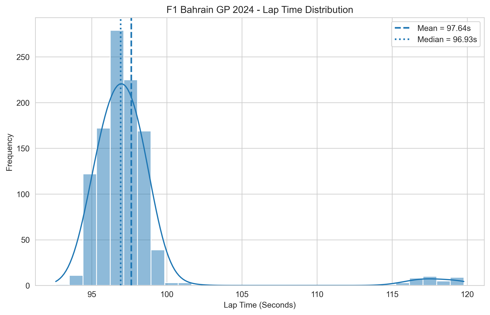
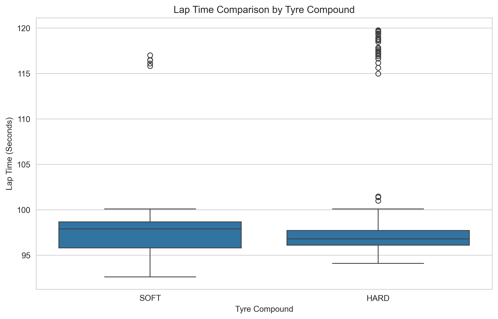
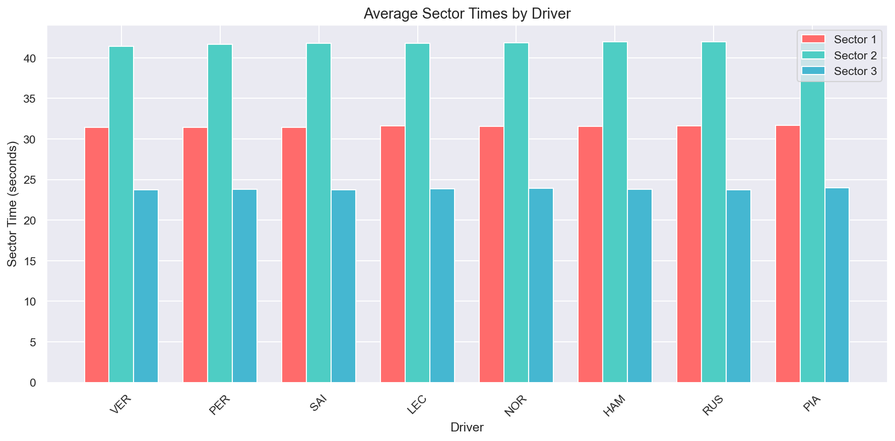
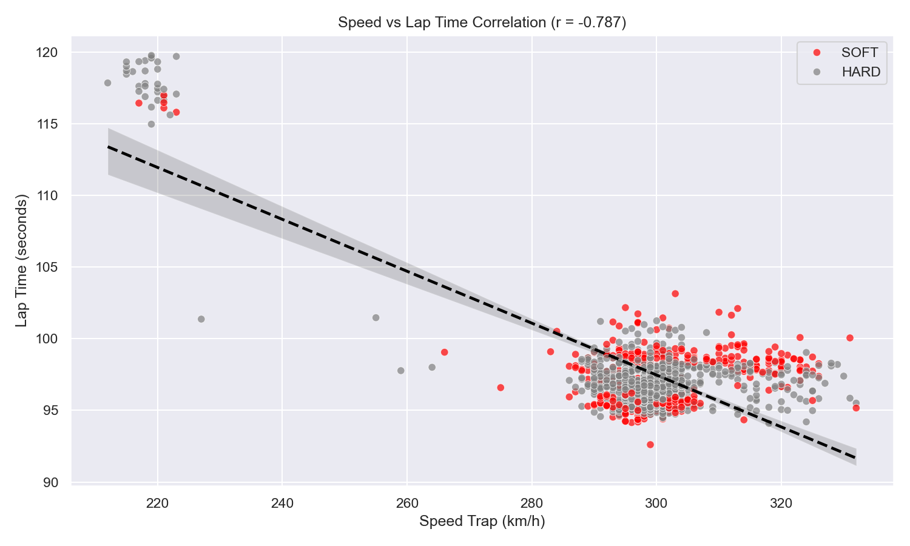
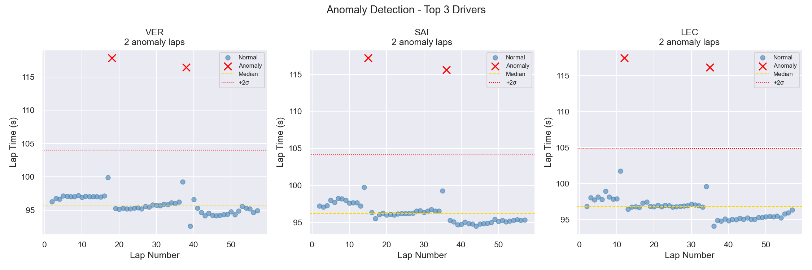
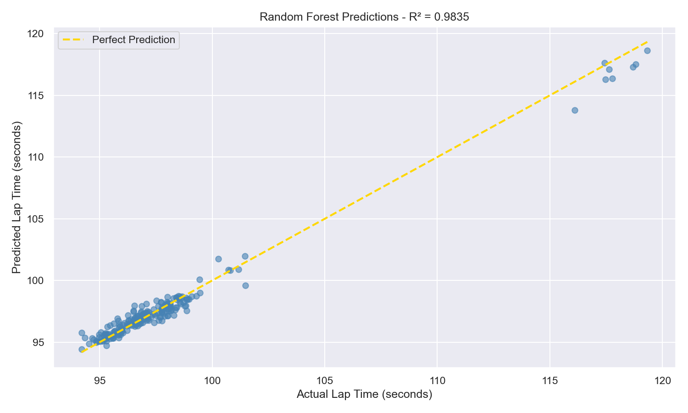
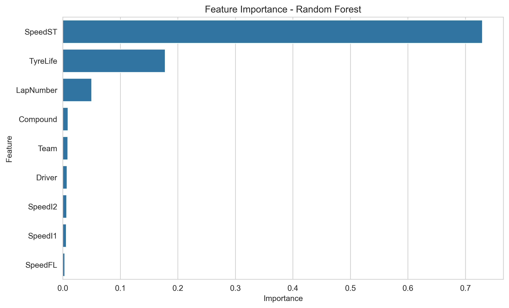

Machine Learning • FastF1 • Data Analytics
R² Score
MAE
SpeedST Importance
Developed by Nivedhitha K
This project analyzes Formula 1 Bahrain Grand Prix 2024 race data using Python, FastF1, Machine Learning, and Data Visualization techniques.
Predict Formula 1 lap times using a Random Forest Regression model and identify key performance factors affecting race outcomes.
MAE: 0.289 seconds
R² Score: 0.986
SpeedST: 72.95%
TyreLife: 17.83%
LapNumber: 5.02%
Bahrain Grand Prix consists of 57 laps. The lap counter below simulates race progression.







Speed Trap Speed and Tyre Life were the most influential factors affecting lap time performance. The Random Forest model achieved high predictive accuracy with an R² Score of 0.986 and MAE of 0.289 seconds.